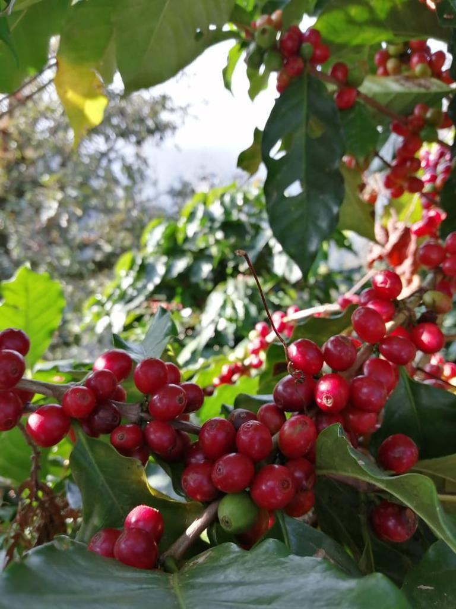
FincaMatas de calidad, cuidado en campo, altura y selección desde el origen.
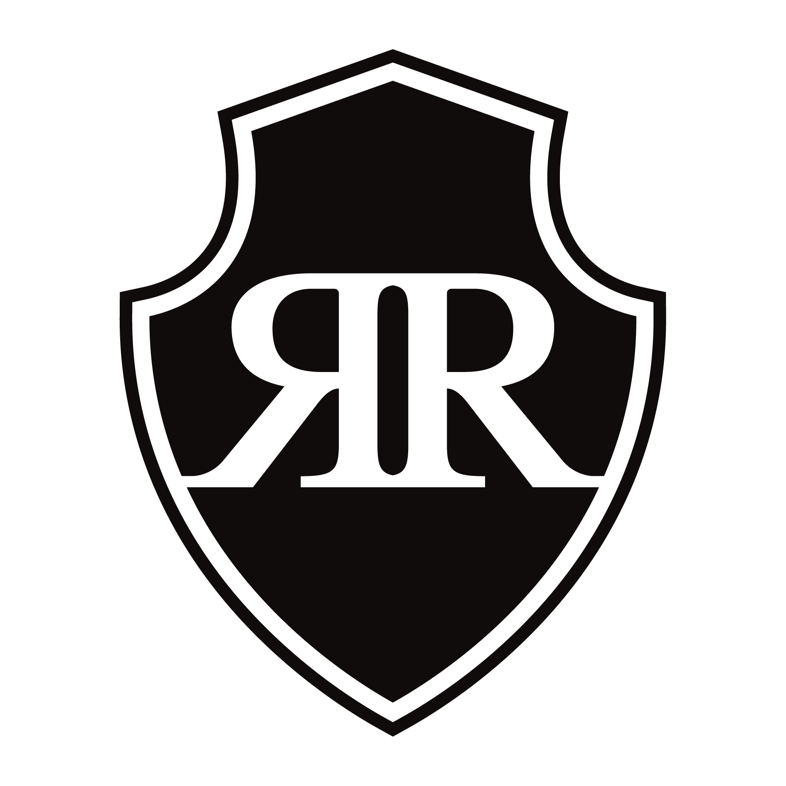
Café Real RenteríaProfesionales del café · Profesionales del tostado
Orizaba, Veracruz
Somos una casa tostadora de café de origen, fundada en las Altas Montañas de Veracruz. Trabajamos con enfoque en la calidad, la consistencia y el respeto por el producto.
Historia
Café Real Rentería nace en 2020 en Orizaba, Veracruz, como una casa tostadora de origen fundada por los hermanos Rentería Pacheco. Surge con la intención de trabajar el café desde su raíz, entendiendo el valor del grano, de la tierra que lo produce y de las manos que intervienen en cada etapa del proceso.
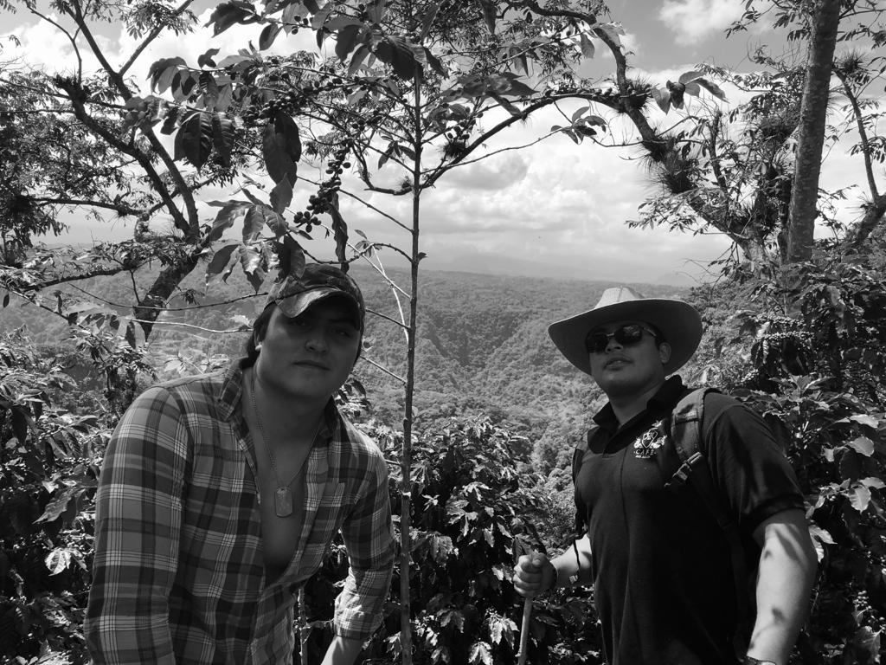
Como todo lo que se construye con tiempo y oficio, la historia continúa escribiéndose.
Desde sus inicios, la marca se ha dedicado a buscar y trabajar granos provenientes de las Altas Montañas de Veracruz, una región donde la altura, la neblina constante y un clima exigente influyen directamente en el desarrollo del café.
Zentla, Huatusco, Zongolica, Totutla, Tlaltetela, Tepatlaxco, Maromilla y Coatepec forman parte de este territorio cafetalero. En estas zonas se originan perfiles con carácter, complejidad natural y una identidad profundamente veracruzana.
A partir de ese origen, Café Real Rentería ha construido relaciones directas y alianzas con productores de la región, entendiendo que la calidad no comienza en el tostado, sino en el campo.
El trabajo continúa en cada etapa, desde la selección del grano y su procesamiento, hasta el tostado y su presentación final. Cada paso responde a una misma intención, respetar el producto y llevarlo a su mejor expresión.
En octubre de 2023, este camino dio un paso más con la apertura del Bistro Lounge Bar de Café Real Rentería en el Centro Histórico de la Ciudad de México, un espacio donde el café, la cocina y la experiencia se integran en un mismo lugar.
Hoy, Café Real Rentería no solo trabaja café. Lo desarrolla, lo transforma y lo lleva a distintos espacios donde puede ser apreciado.

FincaMatas de calidad, cuidado en campo, altura y selección desde el origen.
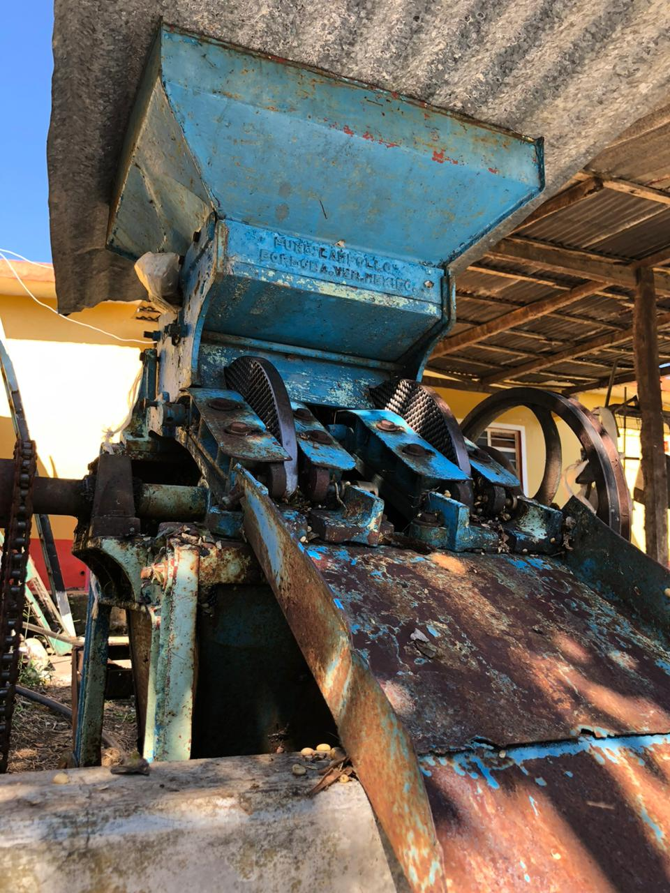
ProcesoSelección, beneficiado y cuidado del grano antes de su tostado.
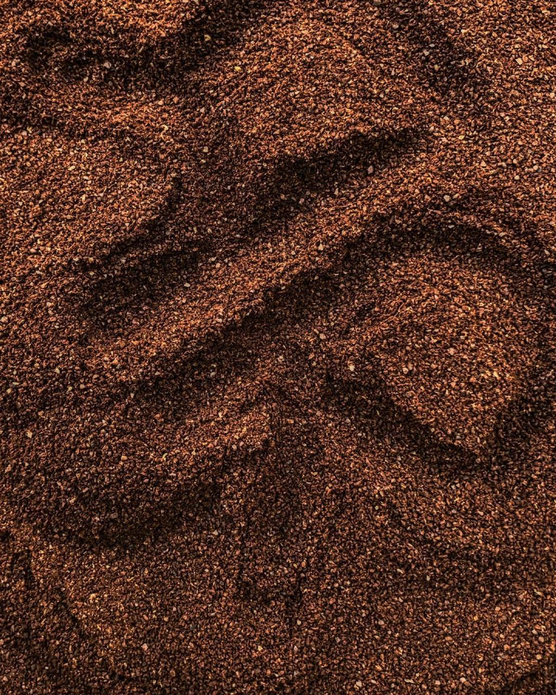
TostadoEl punto donde el carácter del grano se convierte en identidad.
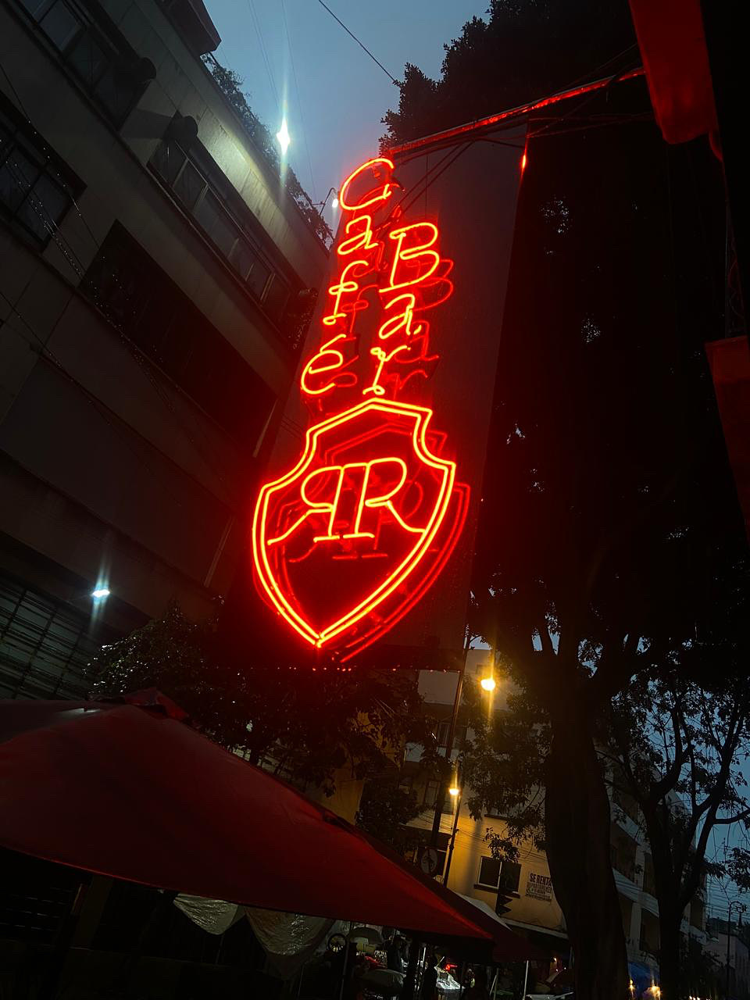
Bistro Lounge BarLa casa donde el café se sirve, se comparte y se vuelve experiencia.
Bistro Lounge Bar
En Café Real Rentería convergen los sabores, los platillos, el café y la hospitalidad. Nuestra casa está pensada para hacerte sentir bienvenido: en tu mesa, en nuestra mesa, como en casa.
Que regreses es un placer para nosotros. Que disfrutes cada visita y quieras volver es nuestra misión. Más que un restaurante, atendemos familia.
 El café como debe ser
El café como debe ser
Servimos café tradicional, trabajado por nosotros desde la finca hasta la taza, con respeto por su origen y por la forma correcta de disfrutarlo.
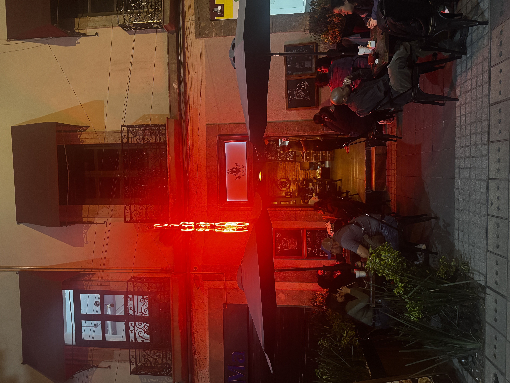
BistroRespetamos tradiciones e innovamos en cada platillo para consentirte como en casa, sorprender a nuestros comensales y ofrecer una experiencia completa.
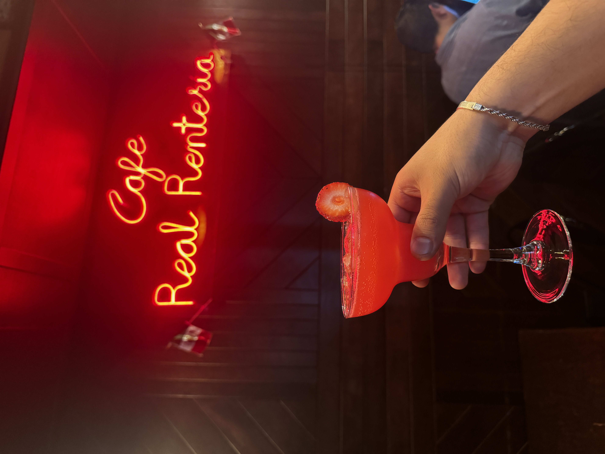
Lounge BarDisfruta cada trago, desde coctelería clásica hasta creaciones de la casa, con o sin café. Un lugar para relajarse, disfrutar y volver.
Ubicación y reseñas
Visítanos en Isabel la Católica 87, en el Centro Histórico de la Ciudad de México. También puedes revisar estrellas, reseñas, fotos y rutas desde la ficha oficial de Google.
Síguenos para ver momentos en el Bistro Lounge Bar y novedades en Café Real Rentería.
Expendio
En nuestro expendio encontrarás mezclas creadas para satisfacer los distintos paladares de nuestros clientes. Cada una tiene un perfil propio, pensado para acompañar diferentes gustos, momentos y formas de disfrutar el café.
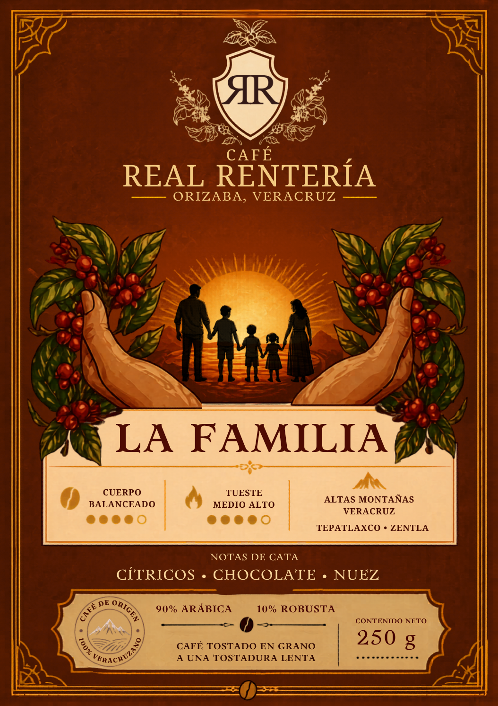
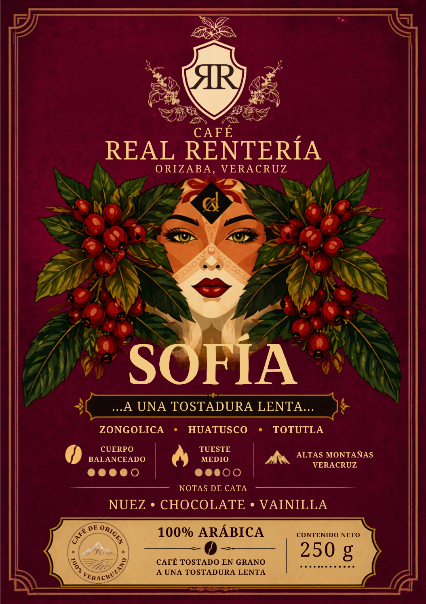
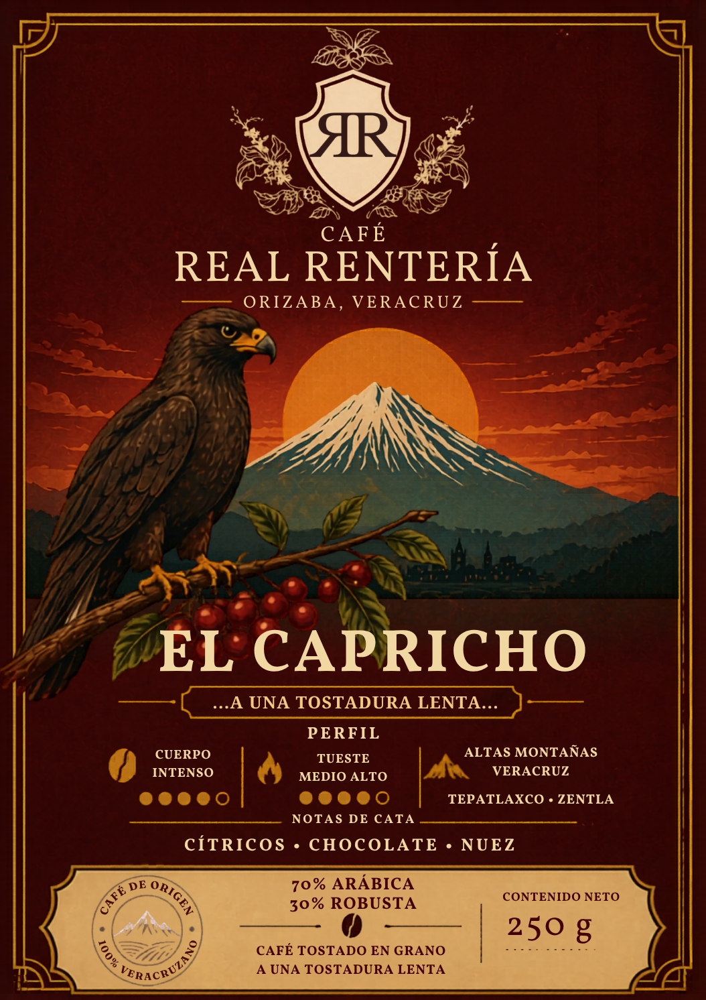
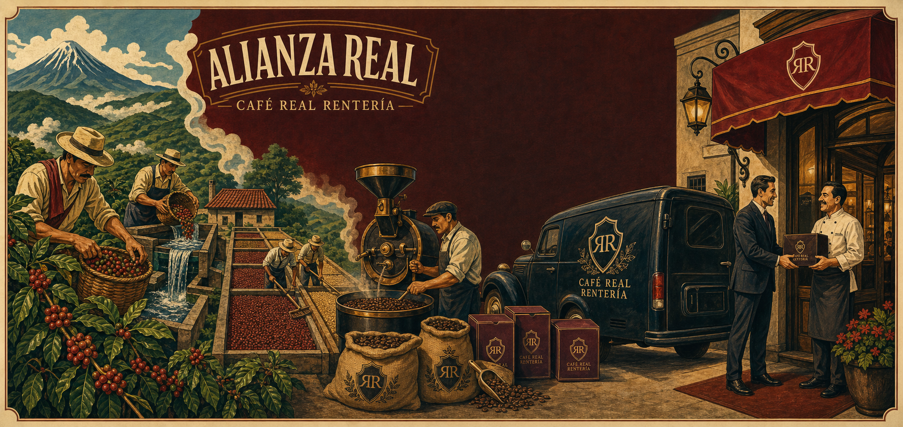
Alianza Real
Alianza Real es la línea comercial de Café Real Rentería creada para construir relaciones con cafeterías, restaurantes, hoteles, casinos, comedores industriales, oficinas e instituciones que buscan servir café con identidad, consistencia y respaldo.
Trabajamos café a mayoreo con envío a cualquier parte de México, llevando nuestro trabajo desde el origen hasta los espacios donde sus clientes lo disfrutan todos los días.
Contacto
Ponte en contacto con nosotros. Queremos atenderte, resolver tus dudas y recibirte en nuestra casa como te mereces.